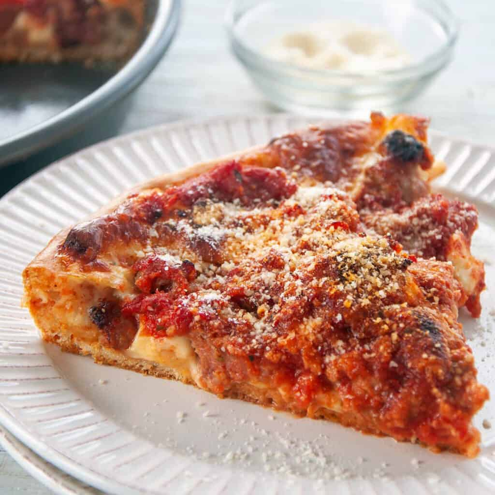

Chicago Style 'Za

At long last, you will finally be able to indulge in the classic, the timeless,
immortal ideal of pizza, the Chicago Deep Dish. One bite of this delicacy and
you'll forget all about whatever Sbarro is serving up in Time's Square.
Ingredients
Crust
- 8.25 ounces room-temperature water
- 1 packet active dry yeast
- 1 tsp sugar
- 12.5 ounces all purpose flour
- 2.5 ounces medium grind cornmeal
- 1.5 tsp kosher salts
- 1/8 tsp cream of tartar
- 1/3 cup Olive oil
Sauce
- 28-ounce can of whole San Marzano tomatoes
- 1/2 white onion
- As much garlic as you want (at least a few cloves)
- pinch of crushed red pepper flakes
- Sprinkle of oregano
- shake of basil
- 3 Tbsp tomato paste
- 1 Tbsp sugar
- Olive oil
Toppings
- Mild Italian Sausage (optional)
- Deli-style sliced provolone
- Deli-style low moisture mozzarella
- pre-grated parmesan
Steps
Tomato Sauce
- Put a 28oz can of whole San Marzano tomatoes into a bowl
and crush by hand until the tomatoes are bite-sized pieces.
- Finely chop half a white onion and smash and peel a few
cloves of garlic. Into a high walled sauté plan, put a few
tablespoons of olive oil and heat over medium until shimmering.
- Once shimmering, add chopped onion and sweat for 2-3 minutes
or until translucent around the edges, then add crushed garlic
and sauté for an additional minute until fragrant. When fragrant,
add a pinch of crushed red pepper flake, a shake of oregano,
a shake of basil, and 2-3 tablespoons of tomato paste.
Cook together for one minute.
- Add the crushed tomatoes along with a tablespoon of sugar.
Simmer for 20-30 minutes over medium heat, stirring regularly
to prevent scorching, until the raw tomato flavor has cooked
off and the sauce is thick. You know it’s thick enough when
you drag a spoon through the sauce, it will part.
- Drop by rounded tablespoon onto lightly greased cookie sheet
- Bake at 350 for 15 minutes or until lightly browned
- Remove from cookie sheet to a wire rack to cool